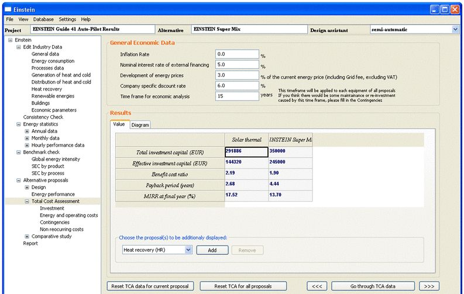
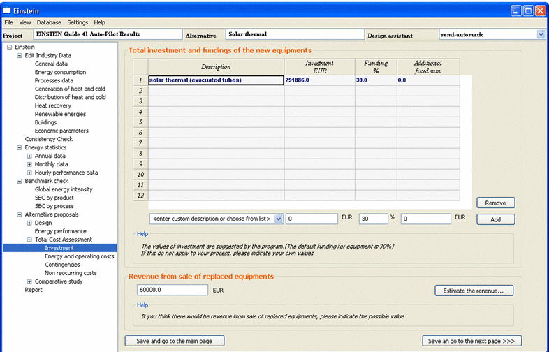
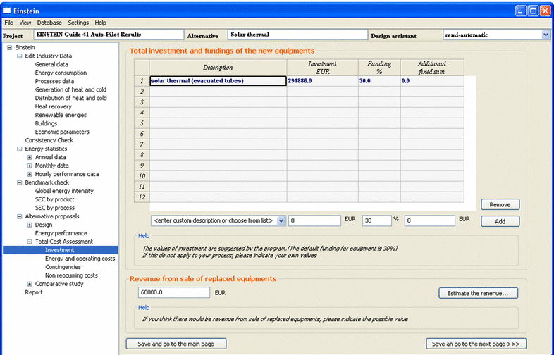
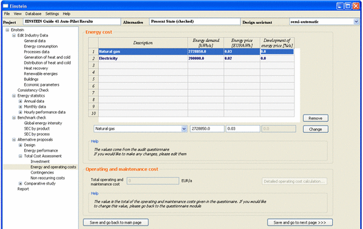
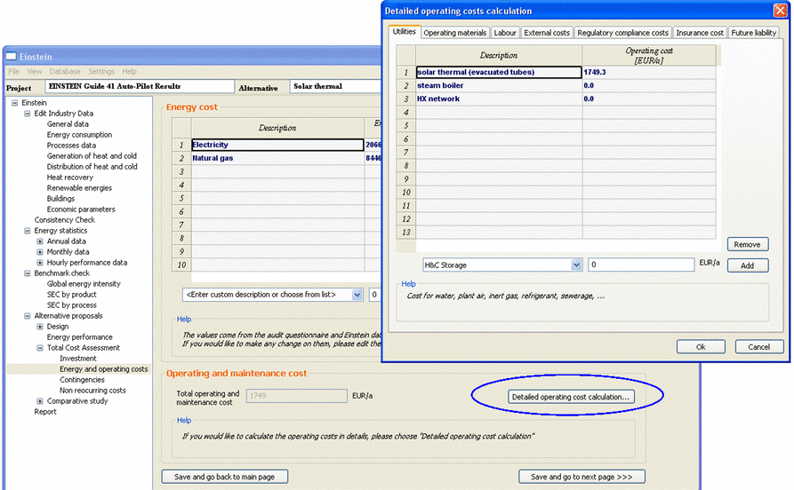
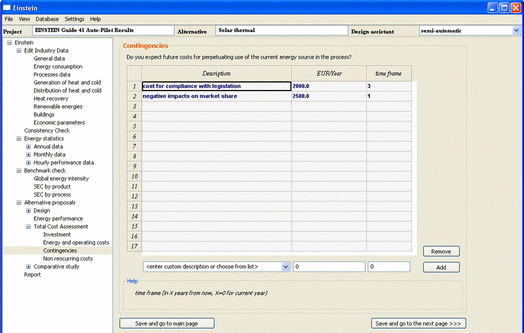
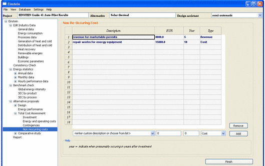

User Manual
Chapter 11: Total cost analysis
11.1:
Overview
11.2:
Main menu options
11.3:
TCA in automatic calculation mode
11.4.
TCA in semi-automatic calculation mode
11.5.
Results of the TCA
Trips & Tricks
11.1: Overview on the TCA
For the company itself the economic analysis of the proposed energy
supply is one of the most crucial questions. Therefore emphasis has to be put
on this step and the more detailed data can be acquired for this analysis, the
higher will be the reliability of the results.
For the economic analysis of a new energy supply systems, operating
(energy) costs have to be compared with the current equipment. Therefore, a
suitable methodology is to calculate all costs that will occur in the future
with the existing heat and cold supply and compare those with the expected
investment and other costs of the proposed alternative energy supply system.
The difference in costs gives the expected cash flow that occurs due to the
change of the supply equipment.
In general the following cost categories need to be considered:
·
Investment costs
o
offers from suppliers or use of 2nd
hand equipment
·
Subsidies and funding
·
Revenues can be achieved through the
sale of the replaced equipment
·
Operating costs
o
Energy costs incl. expected increase
in energy prices
o
Maintenance, labor costs, insurance,
utilities etc.
·
Contingencies
o
In case the current supply system is
not changed: tax disadvantages, costs for remediation activities, costs for
compliance with legislation, negative impacts on market share, affection by CO2
emission trading etc.
o
In case the energy supply system is
changed: tax benefits, positive impacts on markets share, amelioration of
company image
·
Non re-occurring costs
o Repair
works for equipments, exchange of collectors, irregular maintenance, permits,
legal costs, prevention costs etc.
In conventional cost assessments the focus will lie on the investment
costs and operating costs. However, for a consideration of the overall true
costs also contingencies and non-reoccurring costs have to be considered and
they can have an important impact on the final result. The cost analysis should
be suitable for detection of all parameters that influence the economic
performance of energy efficiency and the installation of an energy supply
systems in industrial processes, besides the energy costs.
For a total costs assessment (TCA) that looks at a longer time period
and takes into account macro-economic parameters as well, contingencies and
non-reoccurring cost are the categories for their consideration.
It is obvious that the following parameters are crucial for the result
of the cost assessment:
·
Inflation rate
·
Nominal interest rate of external
financing
·
Company Specific Discount rate
·
Expected development of energy
prices
·
Chosen time frame for the economic
analysis
The result of the economic analysis includes the investment and the
payback period, however should as well include economic parameters that show
the economic performance in a longer time period. Here, the internal rate of
return and the development of the net present value over the years are highly
important.
11.2: TCA - The Main Page
The start page of economic analysis module is structured into 2 parts:
The
general economic data: the most important parameters of TCA
calculation that have been stated in the questionnaire are shown. For changing
these values, user can edit the entries right at the page or go back to the
questionnaire module.
The result of the TCA
calculation: for the selective proposal, the total investment,
the effective investment, the benefit cost ratio, the payback period and the
internal rate of return at payback are presented in the first screen, the net
present value and internal rate of return over the years are diagrammatized in
the subsequent screen. In case user would like to have a comparison between the
elaborated alternatives, you can choose the proposal(s) to add or remove the
calculation results in the comparative table or the diagrams of NPV and IRR
development.

Figure 9.2.1 The
start page of TCA module
At the beginning, the results displayed are those of the fast
calculation, which means the calculation carried out
automatically with the inputs available in the database for the moment. In
order to perform a more manual calculation, users are advised to go through the
cost categories to check and revise the available values or give the additional
inputs.
11.3: TCA in
automatic calculation mode
The fast calculation is carried out
automatically with the information previously provided by the users in the
questionnaires and the costs from the pre-design of alternative supply system.
As this is a quick and automatic calculation, only main cost categories are
taken into account including the investments and subsidies, energy costs,
operating and maintenance costs. The contingencies and non-reoccurring costs
requiring more detailed information are not included in the calculation. The
external financing (funding) and revenue from the sale of replaced equipments
which are not available from the questionnaires nor the pre-design module are
appointed as a default value of 30% for external financing and 0 EUR for the
revenue from the sale of replaced equipments.
11.4: TCA in
semi-automatic calculation mode
A more manual calculation of TCA is available for the user’s choice. In
the semi-automatic and manual mode of EINSTEIN, users can optionally give your own
values for the calculation of the costs. The investment, operating and
maintenance cost and energy cost which are formerly defined can be changed and
the contingencies and non-reoccurring costs can be additionally filled in here.
From the start page, you can click on the button “Go through TCA data” to check
and edit the data step by step or click on the cost category in the left hand
side directory to jump to the page they would like to change.
How to change the investments: the investments of all equipments calculated from the
pre-design modules are
listed in the investment page. In case you have your own values which are not
the same as those calculated by the tool-kit, you are suggested to click on the
row of equipment you would like to change and re-enter the value of investment
in the edit field at the bottom of the grid. In this page, users can also
change the value of funding defaulted by the program. In the manual calculation
of investment, the possible revenue from sale of replaced equipments is also
taken into account. Users can fill in the estimated number of the revenue right
in this page or click on the “estimate the revenue” to calculate the revenue
more details.
 

Figure 11.4.1 The page of investment of the new process
How to change the energy cost: energy demand, energy price and general energy price
development from the database are shown in the page of energy, operating and
maintenance costs. In order to change any of these values, just click on the
respective energy item and edit the data in the edit field at the bottom of the
grid, the program will then automatically calculate the new total energy cost.

Figure 11.4.2 The pages of energy and operating and maintenance cost of current process and new alternative
How to change the operating and maintenance costs: information on the total operating and maintenance
cost are represented in the same page of the energy cost. For the current
process, the data to calculate the total operating and maintenance cost are
formerly defined by the users through the questionnaire. In order to change
this total operating cost, you are required to turn back to the questionnaire
module and to edit the detailed entries (see…). For the new process, the total
operating and maintenance cost is generated from those of
each equipment which are calculated by the tool-kit. Users are free to
change this figure by clicking on the “detailed operating cost calculation”
button, the operating and maintenance cost of each equipment
can be afterward detailed with cost categories of utilities, operating
materials, labour, external costs, regulatory compliance costs, insurance
costs, and future liability costs. After you give here new data, the total
operating and maintenance cost will be updated accordingly.

Figure 11.4.3 The page of detailed operating cost calculation
How to add the contingencies and non-reoccurring costs: several categories of contingencies and
non-reoccurring costs are shown in two different pages. For the contingencies,
users need to specify the cost and the timeframe (which means the year from
when the contingency happens to the end of the project timeframe). For the
non-reoccurring costs, parameters need to be specified are the cost and the
year of occurrence.
 
Figure 11.4.4 The pages of contingencies and non-reoccurring cost
What
should be done if you do not want to use your own data but the data formerly
proposed by the tool? The
buttons of “Reset TCA data for current proposal” and “Reset TCA data for all
proposals” in the main page enable users to recall the TCA data from the
database. Keep in mind that by clicking on the reset buttons, all the data
defined yourselves will be deleted and replaced by those in TCA database.